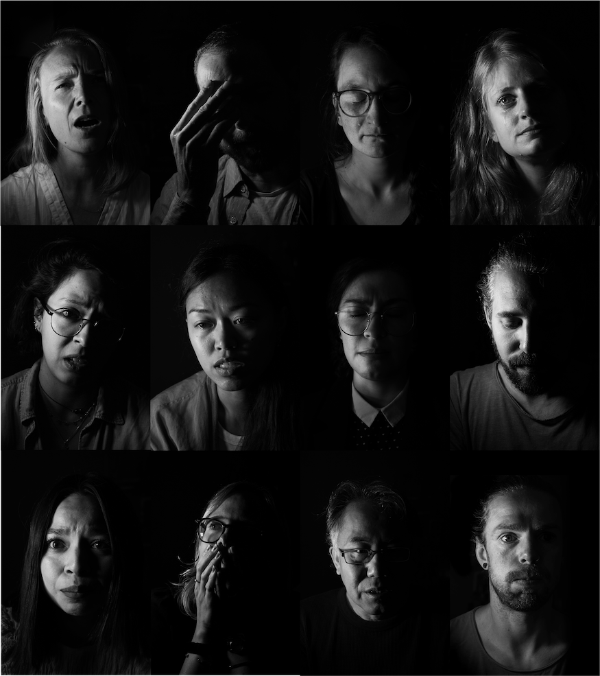

Hope? and how to grieve for the planet
‘Do you feel hope about the state of the planet?’ – this is a question that has been churning around in my head over the last few years. I’m an environmental scientist – I’ve worked on biodiversity, extinction, greenhouse gas emissions, sustainability, international development, climate change. My research focuses on how to get research into actionable policy. Do I feel hope? No. Not at all. I feel a searing sense of fear. I feel anxious. I feel depressed. I feel demotivated. I feel fraudulent. I feel overwhelmed. I feel guilty. But now, I also feel better than I did 12 months ago. I want to tell you why.
Last year I started talking to a researcher friend of mine about how dire things seemed for the environment – the fatal heat wave in the Pacific North West, the catastrophic flooding in Western Europe and central China, raging fires in California, insanely high record-breaking temperatures in Arctic Russia and the Antarctic. Soon, the conversation moved on from facts and figures to how we felt. I told him I felt scared by what was coming and frustrated that we hadn’t done more. He told me he felt infuriated that everybody seems to be ignoring what we know is coming. We continued chatting over several months, chatting when we could from different parts of Europe where we live. I realised after a while that sharing my feelings and fears felt cathartic, and knowing another researcher shared my panic and shame gave me comfort
I decided to try to capture these feelings in a photography project: photography being my second passion. I set out interviewing friends and colleagues, asking each person to describe their feelings about the state of the planet in three adjectives – discussing each in turn. I ended the conversations asking if they felt hope. We then worked together to select one image for each word that captured their feelings. The result is ‘Hope? and how to grieve for the planet’: a free virtual exhibition and gallery. The project aims to start a conversation about how we as researchers and communicators working on the front line of climate and environmental science feel about the crises currently facing us. It also aims to remind the public that we are human, too – and we’re scared and hopeful in varying degrees.
I realised during the project that most of my participants could be placed somewhere across the well-established stages of grieving: shock, numbness, anger, panic, guilt, loneliness and isolation, depression, hope, helping others. And I realised that we can learn so much from one another as we approach the challenges in different ways: sharing our grief but also our hope and faith.
The pandemic isolated us from our communities and support networks, further driving home the need for the systemic change needed to tackle global crises: something that has been exacerbated by the Russian invasion of Ukraine. But it’s perhaps also a perfect time to actively seek out safe spaces to share our emotions and support one another.
So, I don’t feel hopeful on a daily basis, but I do feel connected, valued, loved and understood.

May 2022
